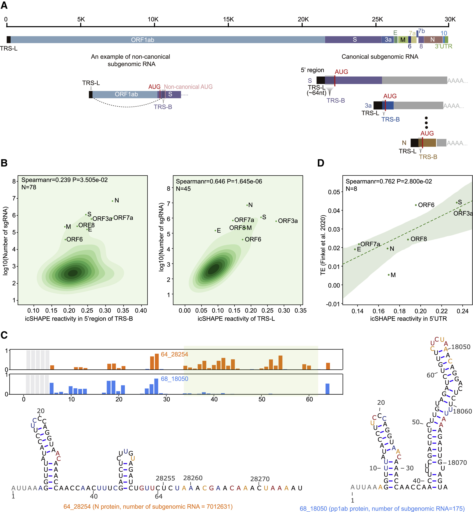
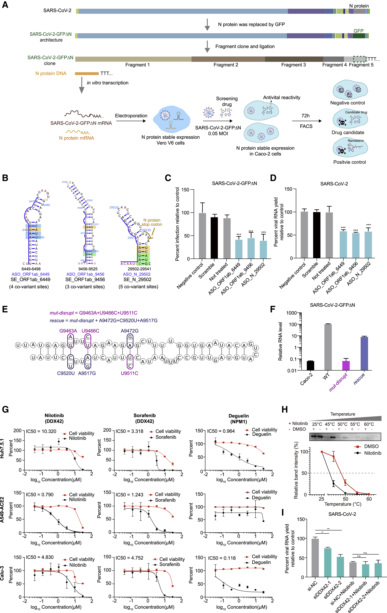

Viral RNA
Genome-level view of RNA architecture, replication logic, and mutation flow across SARS-CoV-2 evolution.
Genome Organization
SARS-CoV-2 contains a positive-sense, single-stranded RNA genome of about 30 kb. Beyond encoding proteins, this RNA also acts as a regulatory molecule whose folding state can influence replication, discontinuous transcription, translation efficiency, and interactions with host RNA-binding factors.
The genome includes ORF1ab, structural genes (S, E, M, N), accessory regions, and untranslated regions. During infection, subgenomic RNAs are generated to express structural proteins, including spike and nucleocapsid, and their local RNA structural contexts can shape how efficiently these transcripts are produced and translated.
Tracking structure-linked behavior across coding and non-coding regions helps separate stable regulatory elements from rapidly adapting regions under host and transmission pressures.
Reference Wuhan genome sequence
The Wuhan reference genome (EPI_ISL_402123) is provided below as the nucleotide FASTA baseline for RNA-level analyses on this page.
Loading Wuhan FASTA...
Subgenomic RNA Structure-Function Landscape

This panel integrates subgenomic RNA architecture with structure-linked functional readouts. It provides a shared framework for comparing canonical transcripts, including spike RNA, and relates local RNA flexibility to both transcript abundance and translation-related outputs.
Conserved Elements and Nucleocapsid RNA Targeting

This panel focuses on functional interrogation of conserved RNA structural elements. For nucleocapsid RNA, it highlights a conserved N-region element used in targeted perturbation experiments and connects these structure-directed interventions to reduced infection-associated readouts in cell systems.
RNA Analysis Framework
| Module | What to Track | Why It Matters |
|---|---|---|
| Codon usage and bias | Codon-frequency shifts, codon adaptation index (CAI), host-preferred codon enrichment | Informs translation efficiency, host adaptation, and potential lineage fitness effects |
| Genome architecture | ORF boundaries, UTRs, structural and accessory genes | Provides region-aware interpretation baseline |
| Mutation characterization | Synonymous vs non-synonymous changes, indels | Distinguishes drift from potentially functional shifts |
| Temporal dynamics | Monthly frequency trajectories by locus | Links molecular change to lineage emergence timing |
| Surveillance integration | RNA changes with lineage metadata | Improves evolutionary signal attribution |
References
- [1] Sun, Lei, et al. In vivo structural characterization of the SARS-CoV-2 RNA genome identifies host proteins vulnerable to repurposed drugs. Cell 184(7), 1865-1883.e20 (2021). DOI, ScienceDirect.